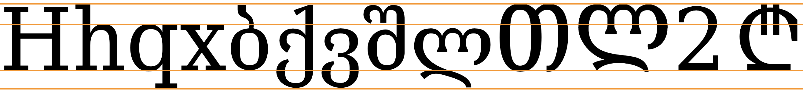

This page brings together basic information about the two scripts used to write modern Georgian: Mkedruli and Mtavruli. There is also a brief overview of Khutsuri (Asomtavruli+Nuskhuri). It aims to provide a brief, descriptive summary of the modern, printed orthography and typographic features, and to advise how to write Georgian using Unicode.
Select part of this sample text to show a list of characters, with links to more details.
Change size: 24px
მუხლი 1.
ყველა ადამიანი იბადება თავისუფალი და თანასწორი თავისი ღირსებითა და უფლებებით. მათ მინიჭებული აქვთ გონება და სინდისი და ერთმანეთის მიმართ უნდა იქცეოდნენ ძმობის სულისკვეთებით.
მუხლი 2.
ამ დეკლარაცით გამოცხადებული ყველა უფლება და ყველა თავისუფლება მინიჭებული უნდა ჰქონდეს ყოველ ადამიანს განურჩევლად რაიმე განსხვავების, სახელდობრ, რასის, კანის ფერის, სქესის, ენის, რელიგიის, პოლიტიკური თუ სხვა რწმენის, ეროვნული თუ სოციალური წარმომავლობის, ქონებრივი, წოდებრივი თუ სხვა მდგომარეობისა.
გარდა ამისა, დაუშვებელია რაიმე განსხვავება იმ ქვეყნის თუ ტერიტორიის პოლიტიკური, სამართლებრივი ან საერთაშორისო სტატუსის საფუძველზე, რომელსაც ადამიანი ეკუთვნის, მიუხედავად იმისა, თუ როგორია ეს ტერიტორია - დამოუკიდებელი, სამეურვეო, არათვითმმართველი თუ სხვაგვარად შეზღუდული თავის სევერენიტეტში.
The Georgian language is spoken by approximately 3,900,000 people in Georgia, as well as by 355,000 people in Azerbaijan, Turkey and Iran.
Characters in the Unicode Georgian blocks represent 4 different letter styles for, with few exceptions, the same phonetic range. Modern Georgian uses only the mkhedruli style of lettering, though occasionally its mtavruli variants are used for emphasis or titles. The asomtavruli and nuskhuri styles are not well understood by ordinary Georgians. They are used together in ecclesiastical texts as the bicameral 'khutsuri' writing system.
The Mkhedruli alphabet is also used for writing the Mingrelian and Svan languages spoken in Georgia, as well as Laz, spoken in Turkey. Asomtavruli and Nuskhuri are now used only by the Georgian Orthodox Church, in ceremonial religious texts and iconography.
The earliest uncontested use of the script dates from a 5th century inscription. Scriptsource describes the subsequent development as follows:
Since that time, Georgian has been written in three distinct scripts. The original script was an inscriptional form called Asomtavruli, from which a manuscript form, Nuskhuri, was derived. For a time, these were combined in a bicameral system called Khutsuri in which Asomtavruli letters were used as the upper case and Nushkuri as the lower case. Since the 11th century, a third script has been attested, called Mkhedruli. There is some debate as to the origins of this third script; some scholars say that it evolved from the Khutsuri system, other, that it pre-dates it. What is generally agreed upon is that Mkhedruli was used as a secular script alongside the ecclesiastical Khutsuri until the 18th century, since which time it has been used for nearly all Georgian writing. The three scripts share the same letter names, despite having different letter shapes.
Mkhedruli (მხედრულიmχɛdrulimxɛdruli) is the standard set of characters for writing modern Georgian. It is normally used as a monocased script, even though there are Unicode mappings to uppercase variants (see mtavruli).
For more information about the characters, click on them and follow the links to the character notes page.
Mtavruli
Mtavruli (მხედრული მთავრულიmχɛdruli mtavrulimxɛdruli mtʰɑvruli) is also used for writing modern Georgian. These characters in Unicode are classed as uppercase versions of the mkedruli, however in modern text they are normally used like all-caps rather than at the beginning of a sentence or proper noun, etc. They are typically used to emphasise words or for headings.w,#Mkhedruli
The mtavruli letters are have similar forms to the mkhedruli except that, in principle, all letters written in the mtavruli style appear with an equal height standing on the baseline, similar to small caps in the Latin script.
Dedicated characters were only introduced in Unicode v11. Prior to that, authors had to use special fonts with the mkhedruli code points in order to write mtavruli letters.
At the time of writing, there are still not many Unicode fonts that provide glyphs for the mtavruli characters, and browsers on OS X and iOS browsers map (most) mtavruli letters to mkhedruli glyphs if a font doesn't contain the necessary glyphs.
Ecclesiastical/archaic Georgian scripts
Asomtavruli
Asomtavruli was used for writing historic Georgian inscriptions, and is really only used in liturgical texts now. These characters in Unicode are classed as uppercase versions of the nuskhuri, and in religious texts they are mixed in a similar way to capitals and lowercase characters in the Latin script. This mixture is called khutsuri.
Nuskhuri
Nuskhuri developed as a non-inscriptional alphabet, alongside Asomtravuli, and is also only used in liturgical texts now. These characters in Unicode are classed as lowercase versions of the asomtravuli.
Khutsuri
In religious texts asomtravuli and nuskhuri are mixed in a similar way to capitals and lowercase characters in the Latin script. This mixture is called khutsuri.
There is a one-to-one mapping of mkhedruli/mtavruli characters and their khutsuri counterparts (asomtavruli and nuskhuri). For a brief overview of the khutsuri letters, see khutsuri_description.
The scripts are alphabets. Both consonants and vowels are indicated by letters. See the table to the right for a brief overview of features for the orthography of the modern Georgian language, including both mkhedruli and mtavruli.
The script is very close to the phonetics of the language, and all 4 styles generally provide a letter for each sound in a very regular way.
Georgian texts run left to right in horizontal lines. Words are separated by spaces. The visual forms of letters don't usually interact.
Case is a little special. When asomtavruli and nuskhuri are mixed as khutsuri, then words may be title-cased, and there was an attempt to introduce something similar for mkhedruli in the mid-20th century, but modern Georgian is normally written using lowercase only. If the mtavruli capitals are used, they are applied to a whole word at the minimum, so their use is more akin to ALL-CAPS than to the Capitalisation used in the Latin script.
Mkhedruli has 28 basic consonant letters, which are matched by 28 mtavruli letters for all-caps text. Stops are either unvoiced aspirated, unvoiced (lightly) ejective, or voiced.
Mkhedruli is a straighforward alphabet that uses 5 letters to represent vowels. There are 5 mtavruli letters to match them. There are no combining marks, and no decompositions.
Vowel letters can be used in standalone positions without any special arrangements.
Here is the set of characters described in this section. They are all letters.
ა␣ე␣ი␣ო␣უ␣Ა␣Ე␣Ი␣Ო␣Უ
Vowel letters
ი␣უ␣ე␣ო␣აᲘ␣Უ␣Ე␣Ო␣Ა
Standalone vowels
Standalone vowels are written using ordinary vowel letters and no special arrangements.
ადამიანი
Vowel sounds to characters
This section maps Georgian vowel sounds to common graphemes in the mxedruli and mtavruli orthographies. x represents mxedruli; t represents mtavruli. Click on a grapheme to find other mentions on this page (links appear at the bottom of the page). Click on the character name to see examples and for detailed descriptions of the character(s) shown.
Sounds listed as 'infrequent' are allophones, or sounds used for foreign words, etc.
Plain vowels
i
ი
განიერი
Ი
u
უ
მუხლი
Უ
ɛ
ე
ენა
Ე
ɔ
ო
ორი
Ო
ɑ
ა
ახალი
Ა
Consonants
Consonant summary table
The following table summarises the main consonant to character assigments.
The left column is mkedruli, the right is mtavruli.
Despite the many, complex consonant clusters that appear in words (see structure), Georgian has no special glyphs or shaping rules for consonant clusters. As elsewhere, each phoneme is simply rendered with an individual character.
The following is an example of a word with a large cluster of consonants.
მწვრთნელი
Consonant sounds to characters
This section maps Georgian consonant sounds to common graphemes in the mxedruli and mtavruli orthographies. x represents mxedruli; t represents mtavruli. Click on a grapheme to find other mentions on this page (links appear at the bottom of the page). Click on the character name to see examples and for detailed descriptions of the character(s) shown.
Sounds listed as 'infrequent' are allophones, or sounds used for foreign words, Sanskrit, etc.
pʰ
ფ
ფერფლი
Ფ
pʼ
პ
პატარა
Პ
b
ბ
ბალახი
Ბ
tʰ
თ
თევზი
Თ
tʼ
ტ
ტერფი
Ტ
t͡sʰ
ც
ცეცხლი
Ც
t͡sʼ
წ
წელი
Წ
t͡ʃʰ
ჩ
ჩარტყმა
Ჩ
t͡ʃʼ
ჭ
ჭამა
Ჭ
d
დ
დიდი
Დ
d͡z
ძ
ძაღლი
Ძ
d͡ʒ
ჯ
ჯოხი
Ჯ
kʰ
ქ
ქალი
Ქ
kʼ
კ
კაცი
Კ
ɡ
გ
გადაგდება
Გ
qʼ
ყ
ყინული
Ყ
v
ვ
ვარსკვლავი
Ვ
s
ს
სავსე
Ს
z
ზ
ზუსტი
Ზ
ʃ
შ
შავი
Შ
ʒ
ჟ
ჟამი
Ჟ
x
ხ
ხელი
Ხ
ɣ
ღ
ღამე
Ღ
h
ჰ
ჰერცი
Ჰ
m
მ
მოკლე
Მ
n
ნ
ნისლი
Ნ
r
რ
რადგან
Რ
l
ლ
გველი
Ლ
Other features
Other letters
Characters for other languages
The following characters are obsolete in the modern Georgian language, but still used in other languages.l They were removed by the Society for the Spreading of Literacy among Georgians, founded by Prince Ilia Chavchavadze in 1879 because they were redundantw,#Mkhedruli.
The mkedruli letters are, however, still used for the additive counter style (see lists).
IPA values are for the languages that use them. For previous Georgian pronunciation, click on the character to reveal the notes.
ჱ␣ჴ␣ჳ␣ჲᲱ␣Ჴ␣Ჳ␣Ჲ
The above letters are all used for the Svan language, and the 2nd in the list is used also for Mingrelian and Laz.
The characters below were specifically created for use with other languages (Svan and Mingrelian for the first two, and Laz for the last).
ჷ␣ჸ␣ჶᲷ␣Ჸ␣Ჶ
Archaic characters
One Georgian-only character is no longer used (since the 1879 reform).
ჵ␣Ჵ
The characters below were used for other languages in the past, including Bats, Ossetian and Abkhaz.
ჹ␣ჺ␣ჼ␣ჽ␣ჾ␣ჿᲹ␣Ჺ␣ ␣Ჽ␣Ჾ␣Ჿ
Combining marks
Georgian normally has no combining marks, and there are none in the Unicode Georgian block.
It is, however, possible to find a combining accent character used with Laz for certain vowels.
Numbers
Georgian uses the standard western digits.
№ is used to indicate numbers.
The Georgian currency symbol, ₾ is found in the Currency Symbols block.
Text direction
Georgian text runs left to right in horizontal lines.
Georgian letters don't interact, so no special shaping is needed.
There are no combining marks.
Typographic units
Word boundaries
Words are separated by spaces.
Graphemes
tbd
Punctuation & inline features
Phrase & section boundaries
,␣:␣;␣.␣?␣!␣჻
Georgian uses ASCII punctuation.
phrase
,
;
:
sentence
.
?
!
paragraph
჻
჻ was formerly used to indicate the end of a paragraph, but is not common in modern Georgian. When used, it appeared at the end of the last line in the paragraph.
Bracketed text
(␣)
Georgian commonly uses ASCII parentheses to insert parenthetical information into text.
start
end
standard
(
)
Quotations & citations
„␣“␣«␣»
Amharic texts typically use quotation marks as the default, and guillemets for embedded quotations.
start
end
initial
„
“
nested
«
»
According to CLDR, the default quote marks for Georgian are „ at the start, and “ at the end.
When an additional quote is embedded within the first, the quote marks are « and ».
The following example shows quotation marks used to offset terms.
თავრული სტილი არასოდეს გამოიყენება როგორც ე.წ. „დიდი ასოები“.
Emphasis
Modern Georgian tends to use mtavruli characters for a word or phrase to show emphasis or highlight it. The mtavruli characters are used like ALL-CAPS and applied to whole words or phrases, and never just the first letter in a word.
Line & paragraph layout
Line breaking & hyphenation
The primary line-break opportunities for Georgian text are the spaces between words.
In-word line-breaking
Georgian uses hyphenation to fit text to lines better.
An example of hyphenation in Georgian.
Line-edge rules
As in almost all writing systems, certain punctuation characters should not appear at the end or the start of a line. The Unicode line-break properties help applications decide whether a character should appear at the start or end of a line.
The following list gives examples of typical behaviours for some of the characters used in modern Georgian. Context may affect the behaviour of some of these and other characters.
Click/tap on the characters to show what they are.
„ « ( should not be the last character on a line.
“ » ) . , ; ! ? % should not begin a new line.
₾ should be kept with any preceding number, even if separated by a space or parenthesis.
№ should be kept with any following number, even if separated by a space or parenthesis.
Baselines, line height, etc.
Georgian uses the so-called 'alphabetic' baseline, which is the same as for Latin and many other scripts.
Georgian has no vowel and tone marks to appear above or below base characters, which reduces the complexity of the line content.
To give an approximate idea, fig_baselines compares Latin and Georgian glyphs from Noto fonts. The metrics of the Georgian letters are the same as those of the Latin, including x-height, descenders, ascenders, and cap-height.
Font metrics for Latin text compared with Georgian glyphs in the Noto Serif Georgian (top) and Noto Sans Georgian (bottom) fonts.
fig_baselines_other shows similar comparisons for the Segoe UI and BGP 2017 DejaVu Serif fonts.

Latin font metrics compared with Thai glyphs in the Segoe UI (top) and BGP 2017 DejaVu Serif (bottom) fonts.
Counters, lists, etc.
You can experiment with counter styles using the Counter styles converter. Patterns for using these styles in CSS can be found in Ready-made Counter Styles, and we use the names of those patterns here to refer to the various styles.
The modern Georgian orthography uses an additive style.
Additive
The georgian additive style uses these letters. It is specified for a range between 1 and 19,999. It uses mkhedruli characters, several of which are archaic in written text.
The default list style uses a full stop + space as a suffix.
Examples:
ჵ. ჰ. ჯ. ჴ. ხ.
Separator for Georgian list counters.
Page & book layout
Ecclesiastical/archaic Georgian
All the character lists in this section show asomtavruli to the left and nuskhuri to the right.
Georgian language characters
The following characters are used for the Georgian language.
Vowels
Ⴈ␣Ⴓ␣Ⴄ␣Ⴍ␣Ⴀⴈ␣ⴓ␣ⴄ␣ⴍ␣ⴀ
Stops
Ⴔ␣Ⴎ␣Ⴁ␣Ⴇ␣Ⴒ␣Ⴃ␣Ⴕ␣Ⴉ␣Ⴂ␣Ⴗⴔ␣ⴎ␣ⴁ␣ⴇ␣ⴒ␣ⴃ␣ⴕ␣ⴉ␣ⴂ␣ⴗ
Affricates
Ⴚ␣Ⴜ␣Ⴛ␣Ⴙ␣Ⴝ␣Ⴟⴚ␣ⴜ␣ⴛ␣ⴙ␣ⴝ␣ⴟ
Fricatives
Ⴅ␣Ⴑ␣Ⴆ␣Ⴘ␣Ⴏ␣Ⴞ␣Ⴖ␣Ⴠⴅ␣ⴑ␣ⴆ␣ⴘ␣ⴏ␣ⴞ␣ⴖ␣ⴠ
Nasals
Ⴋ␣Ⴌⴋ␣ⴌ
Liquids
Ⴊ␣Ⴐⴊ␣ⴐ
Characters for other languages
The first 3 characters are obsolete in the Georgian language, but are still used in Svan, Mingrelian, and Laz languages.l The last character in the list was created specifically for use with Svan.
ⴡ␣ⴢ␣ⴣ␣ⴤ␣ⴧჁ␣Ⴢ␣Ⴣ␣Ⴤ␣Ⴧ
Archaic characters
The following characters are archaic. The first pair was used for Georgian, and the second for Ossetian.
Ⴥ␣Ⴭⴥ␣ⴭ
Punctuation, etc.
Khutsuri punctuation has evolved over the centuries. It uses a variety of dots to separate phrases, clauses, and paragraphs.w,#Punctuation
Numbers were traditionally represented using letters.